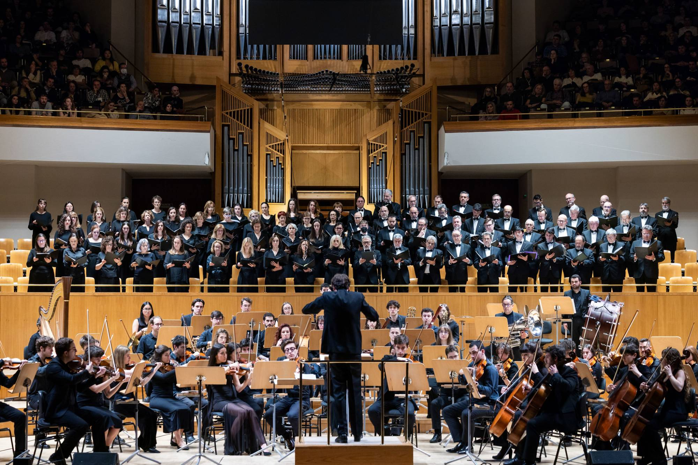

Especialidades
Se convocan audiciones para formar parte de la Orquesta Sinfónica de la Universidad Politécnica de Madrid en las siguientes especialidades:
Envío de solicitud
Las solicitudes para realizar las pruebas de acceso se enviarán al mail orquesta@upm.es antes del domingo 30 de agosto de 2026 a las 12:00.
La solicitud incluirá el formulario de inscripción adjunto rellenado, que puede descargarse en el siguiente enlace:
El formulario se enviará junto al vídeo de la prueba, en el mismo envío a orquesta@upm.es.
Descargar formulario de inscripciónDesarrollo de las audiciones
Las audiciones se desarrollarán de manera online, mediante un vídeo. El repertorio para las mismas será una obra libre, sin la necesidad de pianista acompañante, y deberá cubrir un tiempo aproximado de 5 minutos.
Además, se pedirán pasajes orquestales correspondientes al repertorio del programa de la orquesta para este curso 25-26. Se pueden consultar los pasajes en el anexo final. No se tendrán en cuenta candidaturas para las pruebas que no se presenten con los pasajes orquestales.
El vídeo debe grabarse en una sola toma, en el orden que el aspirante quiera. (El vídeo puede ser superior a 5 minutos ya que incluirá la obra libre y los pasajes orquestales sin cortes). Y será enviado al mail orquesta@upm.es.
Condiciones para formar parte de la orquesta
Se requerirá de los aspirantes el compromiso de cumplimiento de los siguientes requisitos:
- Asistencia regular a la mayoría de los ensayos y a la totalidad de los conciertos.
- Actitud positiva e interés por el desarrollo de las actividades de la orquesta.
- Respeto por los estatutos de la Asociación, así como su Reglamento de Régimen Interno.
Ensayos
Los ensayos tendrán lugar cada domingo en horario de 10:30 a 14:00 en Madrid, en nuestra sede cerca de Atocha. Excepcionalmente se realizarán ensayos en horario de 16:00 a 19:30.
Además de los ensayos, la orquesta llevará a cabo encuentros (ensayos de fin de semana completo) a los que se requerirá la asistencia de los músicos.
Para cualquier duda o consulta puedes escribirnos a orquesta@upm.es.

Anexo I
Listado de pasajes orquestales
El aspirante podrá elegir tres de los siguientes pasajes orquestales de su instrumento, debiendo haber un contraste entre ellos. Percusión: distintos instrumentos. El resto de instrumentos, variación en tiempo y/o diferentes obras.
Clarinete
- Carreño, Margariteña: Compás 140-183 y 201-203
- Carreño, Margariteña: Compás 232-270
- Ginastera, Estancia, Danza IV Malambo: Compás 124-148 y 156-180
- Márquez, Danzón 2: Compás 1-20
- Márquez, Danzón 2: Compás 198-218
Contrabajo
- Ginastera, Estancia, Danza I Los trabajadores agrícolas: Compás 1-65
- Ginastera, Estancia, Danza III Los peones de hacienda: Compás 1-12 y 17-49
- Márquez, Danzón 2: Compás 168-198
- Márquez, Danzón 2: Compás 219-238
- Márquez, Danzón 2: Compás 301-318
Fagot
- Carreño, Margariteña: Compás 34-70
- Carreño, Margariteña: Compás 75-124
- Carreño, Margariteña: Compás 170-193
- Ginastera, Estancia, Danza I Los trabajadores agrícolas: Compás 67-120
Flauta
- Carreño, Margariteña: Compás 26-31
- Carreño, Margariteña: Compás 290-332
- Ginastera, Estancia, Danza II Danza del Trigo: Compás 4-12 y 21-44
- Ginastera, Estancia, Danza IV Malambo: Compás 1-25
- Ginastera, Estancia, Danza IV Malambo: Compás 124-148
- Márquez, Danzón 2: Compás 112-121
- Márquez, Danzón 2: Compás 318-345
Oboe
- Carreño, Margariteña: Compás 167-183
- Ginastera, Estancia, Danza I Los trabajadores agrícolas: Compás 97-163
- Ginastera, Estancia, Danza IV Malambo: Compás 124-148
- Márquez, Danzón 2: Compás 19-43
- Márquez, Danzón 2: Compás 329-345
Percusión
- Xilófono — Ginastera, Estancia, Danza I Los trabajadores agrícolas: Compás 152-184
- Xilófono — Ginastera, Estancia, Danza IV Malambo: Compás 48-55
- Xilófono — Ginastera, Estancia, Danza IV Malambo: Compás 103-171
- Timpani — Ginastera, Estancia, Danza III Los peones de hacienda: Compás 32-81
- Tamburino — Ginastera, Estancia, Danza IV Malambo: Compás 56-71
- Tamburino — Ginastera, Estancia, Danza IV Malambo: Compás 103-147
Trombón
- Carreño, Margariteña: Compás 47-61
- Carreño, Margariteña: Compás 132-152
- Márquez, Danzón 2: Compás 328-361
Trompa
- Carreño, Margariteña: Compás 1-10
- Carreño, Margariteña: Compás 289-305
- Ginastera, Estancia, Danza I Los trabajadores agrícolas: Compás 47-104
- Ginastera, Estancia, Danza III Los peones de hacienda: Compás 1-27
- Ginastera, Estancia, Danza IV Malambo: Compás 26-48, 84-88 y 120-124
- Ginastera, Estancia, Danza IV Malambo: Compás 180-188 y 213-247
- Márquez, Danzón 2: Compás 52-66
- Márquez, Danzón 2: Compás 328-361
Trompeta
- Carreño, Margariteña: Compás 26-31 y 35-45
- Carreño, Margariteña: Compás 128-144
- Ginastera, Estancia, Danza I Los trabajadores agrícolas: Compás 1-38
- Ginastera, Estancia, Danza IV Malambo: Compás 26-48
- Ginastera, Estancia, Danza IV Malambo: Compás 148-156
- Ginastera, Estancia, Danza IV Malambo: Compás 212-219
Tuba
- Carreño, Margariteña: Compás 47-63
- Carreño, Margariteña: Compás 248-265
- Márquez, Danzón 2: Compás 51-112
- Márquez, Danzón 2: Compás 328-361
Viola
- Carreño, Margariteña: Compás 45-60
- Ginastera, Estancia, Danza I Los trabajadores agrícolas: Compás 1-46
- Ginastera, Estancia, Danza I Los trabajadores agrícolas: Compás 105-152
- Ginastera, Estancia, Danza IV Malambo: Compás 13-41
- Márquez, Danzón 2: Compás 300-347
Violín
- Carreño, Margariteña: Compás 47-62
- Carreño, Margariteña: Compás 153-166
- Carreño, Margariteña: Compás 215-234
- Márquez, Danzón 2: Compás 86-112
- Márquez, Danzón 2: Compás 168-182
- Márquez, Danzón 2: Compás 328-345
Violonchelo
- Carreño, Margariteña: Compás 34-45
- Carreño, Margariteña: Compás 191-200
- Carreño, Margariteña: Compás 288-302
- Ginastera, Estancia, Danza IV Malambo: Compás 18-41
- Márquez, Danzón 2: Compás 59-74 y 94-112
- Márquez, Danzón 2: Compás 328-345
Las partituras correspondientes se pueden descargar en el siguiente enlace:
Descargar partiturasAnexo II
Del acceso y baja en la Orquesta Sinfónica UPM
I. Disposiciones generales
Artículo 1.- Acceso y pruebas
El acceso a la orquesta, como miembro de pleno derecho, es libre y universal para cualquier persona que supere las pruebas de acceso y cuyas cualidades y preparación sean suficientes y estén acreditadas.
Este título no es de aplicación:
- A los solistas invitados.
- A los miembros de otras agrupaciones cuando estas colaboren en el desarrollo de un concierto concreto.
Artículo 2.- Convocatoria
La convocatoria de pruebas de acceso se llevará a cabo al inicio de la temporada, preferentemente antes del inicio de los ensayos, en fechas acordadas con la Universidad Politécnica de Madrid. Fuera de estas fechas podrán convocarse pruebas de acceso siempre que sea necesario en caso de necesidades de plantilla.
La convocatoria expresará el día o días para su realización, el lugar donde se llevarán a cabo las pruebas, las especialidades convocadas y los términos del ejercicio. También podrá contener cualesquiera otros criterios de índole musical siempre que sean objetivos razonables. Todo ello será debidamente difundido en los canales de comunicación oficiales de la Asociación y otros que se consideren oportunos.
Cualquier interesado podrá solicitar prueba de acceso en cualquier momento de la temporada, pero su realización quedará condicionada a la decisión del Director acerca de la conveniencia de realizarla, teniendo en cuenta para ello el acomodo al calendario y la necesidad de contar con músicos de determinada especialidad.
Artículo 3.- Presentación de aspirantes
Los aspirantes deberán comunicar su interés en concurrir a la prueba por email desde la fecha de publicación de los términos de la convocatoria hasta la fecha límite indicada en la convocatoria de la prueba. En dicha comunicación, los aspirantes deberán incluir sus datos en la ficha que se proporcionará con la convocatoria de las pruebas.
Artículo 4.- Contenido de la prueba
La prueba constará de las siguientes partes:
- La interpretación de una obra o movimiento de esta elegida por el aspirante, sin necesidad de acompañamiento de piano y con una duración de entre 5 y 10 minutos.
- La interpretación de pasajes orquestales relevantes para el desarrollo de la temporada de conciertos. Dichos pasajes serán elegidos por el Director en cada sesión de pruebas, y puestos en conocimiento de los aspirantes en la información de la convocatoria.
Artículo 5.- Tribunal
El Tribunal estará compuesto, por:
- El Director Artístico, que lo presidirá.
- Uno o varios miembros de la Junta Directiva.
- Un vocal de cuerda, jefe de sección.
- Un vocal de viento, jefe de sección.
El Tribunal podrá funcionar con un mínimo de dos miembros, uno de los cuales será necesariamente el Director Artístico. Así mismo, el tribunal podrá estar compuesto de un mayor número de miembros, a petición del Director o la Junta Directiva de la Asociación.
Podrán, además, asistir los miembros en activo de la orquesta que lo soliciten, con autorización del Director.
II. Valoración de los aspirantes
Artículo 6.- Criterios de valoración
Cada miembro del tribunal valorará a los aspirantes con una nota, resultante de la media de los dos ejercicios musicales. La media de las valoraciones de estos dará lugar a la nota definitiva del aspirante.
Los criterios de valoración constituyen acto discrecional del Tribunal. El Director, a tal efecto, podrá establecer directrices sobre los aspectos a valorar o su ponderación en la nota final.
Artículo 7.- Distribución de plazas
El Director determinará el número de plazas titulares para cada una de las especialidades convocadas. Así mismo, determinará el número de plazas de reserva en atención a la previsión de posibles sustituciones y ampliaciones de plantilla.
Tendrán la consideración de miembros titulares aquellos aspirantes que, habiendo superado la prueba, accedan a una de las plazas vacantes en la especialidad, adquiriendo la condición de miembro de pleno derecho.
Tendrán la consideración de reserva aquellos aspirantes que, habiendo superado la prueba, no dispongan de plaza vacante. Su situación quedará en suspenso, siendo llamados para sustituciones puntuales y ampliaciones de plantilla, adquiriendo la condición de titulares cuando se produzca una vacante.
Artículo 8.- Deliberaciones
Las deliberaciones llevadas a cabo por el Tribunal serán secretas.
El Tribunal asignará las plazas titulares según orden decreciente de puntuación. Agotadas estas, procederá a asignar las plazas de reserva con arreglo al mismo criterio.
En caso de empate entre dos aspirantes de la misma especialidad, el Director poseerá el voto de calidad.
Artículo 9.- Resultados
Los resultados se publicarán a lo largo de la semana siguiente a la fecha máxima de envío de la prueba, mediante comunicación por correo electrónico a los aspirantes inscritos en la prueba.
La decisión del Tribunal es inapelable.
III. Régimen de plazas no cubiertas
Artículo 10.- Plazas no cubiertas
Se consideran plazas no cubiertas aquellas que han quedado vacantes tras la convocatoria de una prueba de acceso. Ante esta situación el Director podrá optar por:
- Solicitar una nueva convocatoria de plazas.
- Cubrir las plazas empleando el siguiente procedimiento:
En el caso de un aspirante interesado en formar parte de la agrupación. El Director, a criterio personal, podrá citarle al siguiente ensayo que considere. El aspirante ensayará de forma ordinaria, oído por el jefe de sección y el Director de forma atenta. Al concluir el ensayo, el Director y el jefe de sección acordarán la admisión o no como miembro en pleno derecho. Esta decisión se comunicará al aspirante tras la deliberación.
IV. Prohibiciones de acceso
Artículo 11.- Supuestos
El Tribunal no estará facultado para valorar a los aspirantes que se hallen en alguna de las situaciones que se describen a continuación:
- Aquellos exmiembros que tengan prohibido el regreso a la agrupación.
- A cualquier aspirante del que se tenga constancia que ha promovido, causado o apoyado acciones, declaraciones o manifestaciones que vayan en detrimento de la propia Asociación, la agrupación, de su Director o de cualquiera de sus miembros, intimidad y propia imagen.
El Tribunal comunicará al aspirante la prohibición de acceso que recae sobre él, no estando facultado para emitir valoración alguna.
El aspirante que haya sido declarado incurso en alguna prohibición de acceso, podrá recurrir ante la Junta Directiva de la Asociación, mediante email en el que exponga los motivos de la improcedencia de esta declaración. La Junta Directiva de la Asociación resolverá sobre este extremo en el plazo de 5 días, oído el Tribunal. Dicha resolución será inapelable.